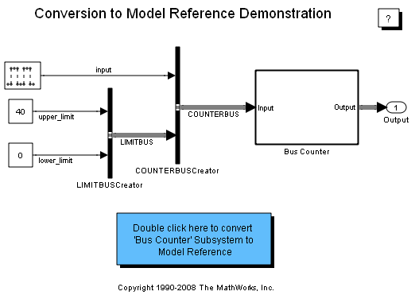
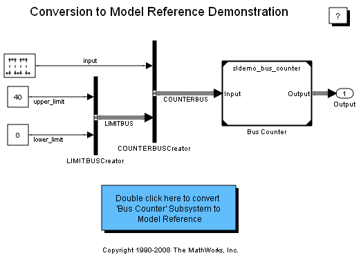

Converting Subsystems to Model Reference
This demonstration shows a way to automate conversion of a model containing buses to use model reference.
Contents
Demo Requirements
During this demonstration, Simulink® generates files in the current working directory. If you do not want to generate files in this directory, you should change the working directory to a suitable directory.
Open the Demo Model
Open the demo model. This model contains an atomic subsystem, Bus Counter, modeling a simple counter.
Convert a Subsystem to Model Reference
You can use Simulink.SubSystem.convertToModelReference to convert an atomic subsystem to model reference. This utility function converts an atomic subsystem by creating a new model, copying the contents of the subsystem into the model, and reconfiguring the root level Inport and Outport blocks and configuration parameters of the model. Then, based on its input arguments, it either replaces the subsystem block with a Model block that references the new model, or it creates another, temporary model containing a Model block that references the model derived from the subsystem block. For more information see Simulink documentation or type:
>> help Simulink.SubSystem.convertToModelReference
at the MATLAB® prompt.
Perform the Conversion
You can run the following command to convert the Bus Counter subsystem to a Model block.
Simulink.SubSystem.convertToModelReference(...
'sldemo_mdlref_conversion/Bus Counter', ...
'sldemo_bus_counter', ...
'ReplaceSubsystem', true, ...
'BusSaveFormat', 'Object'); Simulate and Generate Code from the Model
You can update, simulate, and generate code for the model containing the Model block.
Close Models and Clear Workspace
Close the models and clear variables added to the workspace during this demo.